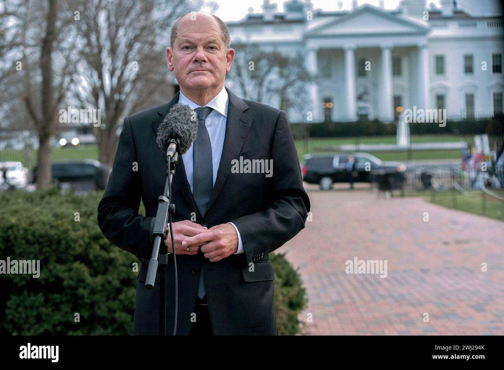

意之意
@lijunyi87429205
@SydneyDaddy1 川普第二次上任还是有好处的，方便我们分辨有哪些名人是真正追求普世价值与人本主义，哪些只是另一类强权的狗腿喉舌，美国胡锡进。

悉尼奶爸 SydneyDaddy 雪梨奶爸 🇦🇺
@SydneyDaddy1
凡事相信泽连斯基是被逼在白宫外面开记者会的（图1），都有严重的认知偏见
白宫马路对面的拉法叶广场本来就是各国领导人拿白宫当背景板打野开记者会的地方，澳洲总理前天见过川普后刚在同样位置开过 (图2，注意话筒位置)
德国前总理舒尔茨离得更远 (图3)，泽连斯基8月份也在这里开过，轻车熟路 (图4) https://t.co/xUJOJh9Cyh https://t.co/k6q2M1rYFl